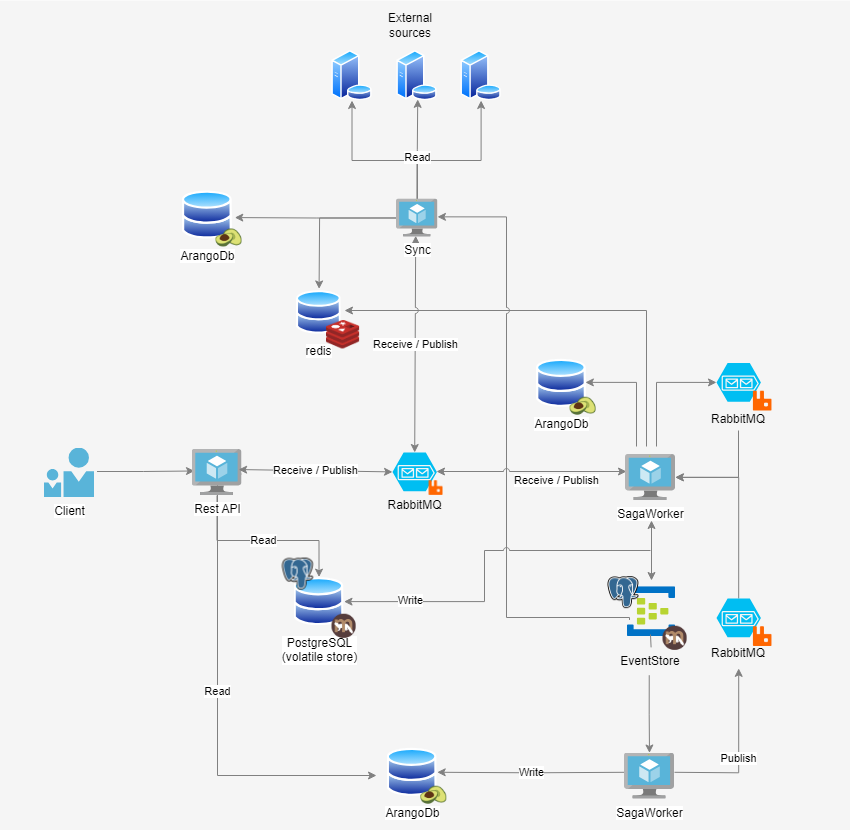

Opening remarks
Welcome to the UserProfileService (abbreviated: UPS) documentation. It should provide you with all necessary information to work with this powerful service.
What is the UserProfileService?
The UPS is a system designed to manage user data and related entities such as groups, organizations, roles, or functions. It consists of three main components:
-
Service: The UPS provides a comprehensive API that allows users to modify entities In this context, "modify" refers to performing CRUD (Create, Read, Update, Delete) operations. This API likely includes endpoints for actions such as creating, updating, deleting, and querying user profiles, groups, organizations, roles, and functions.
-
Saga Worker: This component is responsible for validating and creating or modifying entities based on the requests received through the API. It handles business logic, data validation, and ensures consistency and integrity of the data. The Saga Worker can be considered the centerpiece of the UPS.
-
Sync Service: The Sync Service is used to synchronize entities from a third-party system, specifically LDAP (Lightweight Directory Access Protocol) systems in this case. This component facilitates the synchronization of user data and related entities between the UPS and LDAP systems.
The UPS provides a wide range of functionality that will be explained further in this documenation.
History / Motivation
BMBF-Project
"Das Bundesministerium für Bildung und Forschung (BMBF) unterstützt die Durchführung von Forschungs- und Innovationsprojekten im Rahmen von themenspezifischen und in themenoffenen Förderprogrammen. Das breite Förderangebot ist auf wichtige Innovations- oder Technologiefelder, aber auch auf unterschiedliche Herausforderungen und Ausgangsbedingungen zugeschnitten. Dabei werden insbesondere innovative kleine und mittlere Unternehmen (KMU) mit spezifischen Förderprogrammen adressiert." (Quelle - Bundesministerium für Bildung und Forschung)
Translation: The Federal Ministry of Education and Research (BMBF) supports the implementation of research and innovation projects within topic-specific and open-topic funding programs. The broad range of funding is tailored to important innovation or technology fields, as well as various challenges and starting conditions. In particular, innovative small and medium-sized enterprises (SMEs) are addressed with specific funding programs.
"Im Zuge der Förderung entstand das Projekt E365 Maverick. Es ist ein durch das BMBF gefördertes Forschungsprojekt, welches im Rahmen einer Kooperation zwischen Bechtle AG und Hochschule Bonn-Rhein-Sieg durchgeführt wird. Es bettet sich in die übergeordnete Initiative „Nationale Bildungsplattform“ des BMBF ein." (Quelle - E365 Maverick Projekt)
Translation: As part of the funding, the project E365 Maverick was created. It is a research project funded by the BMBF, which is being conducted in cooperation between Bechtle AG and the Bonn-Rhein-Sieg University of Applied Sciences. It is embedded within the overarching initiative 'National Education Platform' of the BMBF.
Splitting the UPS
Bechtle provides the UPS, which is intended for user data within the digital education platform. Since GitHub is the largest host of open-source projects, the UPS is made available on this platform. Furthermore, the community within the host is very active, leading to an increase in software quality. Improvements can be noted and discussed by the community, largely ensuring a continuous development of the software with the latest technologies and design patterns.
As the current code base of the UPS is currently in an internal project within Azure DevOps Services, this will continue to be used for the customer-specific part.
Introduction ↵
Applied Designed Pattern
The UPS has evolved over time into a complex service with multiple components that adhere to current architecture and design patterns.
Firstly, the service relies on Event-Driven Design (EDD). In EDD, all events related to UPS are stored centrally. An event is an atomic occurrence that propagates a state change. In our case, an event could involve creating, deleting, or modifying an entity (e.g., a user). Data from this central source can be projected into any database and then retrieved. Projection transforms and stores input data into a database-specific format, significantly reducing access times as data doesn't need conversion during reads.
Next, the service follows the Command-Query-Responsibility-Segregation (CQRS) pattern. This pattern advocates for splitting object models into separate read and write parts within a database. The advantage of this pattern is improved scalability, as write operations can run on different hardware from read operations.
Furthermore, the UPS API supports the Asynchronous Request-Reply Pattern(ARRP). This pattern ensures that the API asynchronously handles data modification requests. The status of these modifications can be queried at any time using a dedicated endpoint. Communication in the command part between components is achieved through queuing. Retrieving an entity from the database still occurs via a REST call. Lastly, the UPS utilizes the Saga pattern, which simplifies data handling in distributed systems.
Features
- Manages user data including their relations
- Used entities are hierarchically structured and therefore are stored in a graph.
like:- Users are stored in groups
- Organizations can contain other organizations
- Users or groups can be assigned to Functions or Roles
- Functions limit access of their containing role by an additional organization
- All kind of Assignments can be triggered in the future for an user
- Volatile Data can be stored in a database and can be used as a container without persisted in the eventstore
- Can store the incoming requests in various ways due to its "data projections"
- Contains entity models for roles and functions that can be used as source of a RBAC system or OPA
Licence
We are using following great third-party-libraries
- Automapper
- MassTransit
- Marten
- JsonSubtypes
- Newtonsoft.Json
- Swashbuckle
- Hellang ProblemDetails
- prometheus-net
- StackExchange.Redis
- NLog
- FluentValidations
For testing
Ended: Introduction
Architecture ↵
Main Architecture
The UserProfileService consists of three main components:
UserProfileService.API
This is an interface accessible through public networks, specifically a RestAPI with numerous endpoints designed for managing profile entities.
UserProfileService.SagaWorker
This system operates behind the scenes, carrying out commands triggered by the API or Sync processes. It validates and modifies data, and also monitors queues. Due to its nature, it is not meant to be publicly accessible. For security purposes, its endpoints should be restricted behind a firewall or within an internal network.
UserProfileService.Sync
It facilitates the synchronization of data from external sources with the data currently stored. Currently, we have implemented an LDAP connector as one of these external sources.
The Architecture

The picture illustrates the comprehensive architecture of the UPS system. Clients can request entities stored in the database. The UPS API then retrieves these entities directly from ArangoDB. The models are stored in the database in the format required by the program, minimizing the need for significant transformations when they are returned.
The Client also has the capability to create an entity, such as a group. When a request is made, the API processes the request and returns a ticket as described below. The API then places a command into a queue that is connected to the SagaWorker. The SagaWorker receives the command and performs the following steps:
-
Receives the GroupCreate message.
-
Validates the group.
-
Stores the group in the EventStore, a centralized database for storing events. We utilize the PostgreSQL database along with Marten for this purpose.
-
Projects the group into the Arango database.
If the validation of the group or the storing in the EventStore fails, the entire process will be aborted and reversed.
UPS-Sync
It is also noted that UPS-Sync can synchronize entities from an external source, currently limited to LDAP systems. UPS-Sync uses Redis to temporarily store entities that need synchronization. The Sync module then sends messages to the queue, where the SagaWorker listens and creates the necessary entities in the database. Once an entity is created, the Sync module receives a confirmation message.UPS-Sync can thus keep track of the synchronized entities.
Data-Models
The following core entities can currently be created or managed by the service:
- Users: User information related to an individual is stored, including their first name, last name, and other personal data.
- Groups: Information about a group is stored (name, members, etc.). Multiple users can be grouped together in a group to, for example, assign specific rights to a number of users.
- Organizations: Organizational data is stored.
- Roles: Information about roles is stored. Roles can be used to assign specific rights to users, allowing access to files/operations.
- Functions: A function consists of a tuple, namely a role and an organizational unit. It determines which rights are assigned to a user or a group. If your organization, for example, is named
Department for Airplanesand your role isread, then the name of the function would beDepartment for Airplanes read. In this case, you would only havereadas a permission.
Ended: Architecture
Installation ↵
Requirements
Third-party components
To start the service, you need at least the Service and the SagaWorker components, along with the following third-party components:
- ArangoDb - open-source graph-and document database where user data will be stored. How to configure Arangodb.
- Messaging - multi-protocol messaging and streaming broker - used to send messages between applications. How to configure Messaging.
- PostgreSQL - fast relational database used as volatile store and eventStore. How to configure PostgreSQL.
If you want to use UPS-Sync, you will also need this third-party component:
- redis - open source, in-memory data structure store, used as a database, cache, and message broker. How to configure redis.
Running the UPS from Code
To start using the UserProfileService code, you will need the latest .NET 8.0 SDK, which you can download from here, and the Git source system, available for download here.
Running the UPS with Docker-Images
If you want to use the UPS from Docker images, you'll need to install Docker first. For convenience, you will also need Docker Compose, which can be downloaded here. You can also get the latest images from ghcr.io/bechtleav360.
Configure the UPS
To configure the componenets of the Service refere to:
Configuration ↵
Service ↵
Service Configuration
A valid service configuration can look like this. Please note that you should create a database in ArangoDB and PostgreSQL and grant permissions for the user. This is not done automatically:
Service example configuration
{
"Delays": {
"HealthCheck": "1:00:00",
"HealthPush": "1:00:00"
},
"Features": {
"UseSwaggerUI": true
},
"IdentitySettings": {
"ApiName": "",
"ApiSecret": "",
"Authority": "",
"EnableAnonymousImpersonation": false,
"EnableAuthorization": false,
"EnableCaching": false,
"RequireHttpsMetadata": false
},
"Logging": {
"EnableLogFile": false,
"LogFileMaxHistory": 3,
"LogFilePath": "logs",
"LogFormat": "json",
"LogLevel": {
"default": "Information"
}
},
"Marten": {
"ConnectionString": "Host=localhost;Port=5432;Username=myUser;Password=myPassword;Database=UserProfileService",
"DatabaseSchema": "UserProfile",
"StreamNamePrefix": "ups",
"SubscriptionName": "UserProfileServiceStream"
},
"Messaging": {
"RabbitMQ": {
"Host": "localhost",
"Password": "guest",
"Port": 5672,
"User": "guest",
"VirtualHost": "/"
},
"Type": "RabbitMQ"
},
"ProfileStorage": {
"ConnectionString": "Endpoints=http://localhost:8529;UserName=myUser;Password=myPassword;database=UserProfileService",
"MinutesBetweenChecks": 60
},
"Routing": {
"DiscardResponsePathBase": "",
"PathBase": ""
},
"SyncProxyConfiguration": {
"Endpoint": ""
},
"TicketStore": {
"Backend": "arangodb"
},
"Tracing": {
"OtlpEndpoint": "",
"ServiceName": "userprofile-service"
},
"UseForwardedHeaders": false
}
The service is configured to allow access to all necessary third-party components through the localhost endpoints.
Configure Headers
Here is a sample section on how to configure the headers:
Headers example configuration
{
"UseForwardedHeaders": false
}
UseForwardedHeaders - Specifies whether the application should use forwarded headers or not. When set to false, the application will not use forwarded headers.
Configure Health-Checks
Here is a sample section on how to configure the health checks:
Health-Checks example configuration
{
"Delays": {
"HealthCheck": "00:05:00",
"HealthPush": "00:05:00"
}
}
HealthCheck- Specifies the interval at which health checks are performed. The value is represented in hours, minutes, and seconds format (HH:MM:SS). For example, 00:05:00 indicates a health check interval of 5 minutes.
HealthPush- Specifies the interval at which health push operations are performed. The value is represented in hours, minutes, and seconds format (HH:MM:SS). For example, 00:05:00 indicates a health push interval of 5 minutes.
Configure Identity
Here is a sample section on how to configure the identity settings:
Identity example configuration
{
"IdentitySettings": {
"ApiName": "MyApi",
"ApiSecret": "SuperSecretKey",
"Authority": "https://identity.example.com",
"EnableAnonymousImpersonation": false,
"EnableAuthorization": true,
"EnableCaching": true,
"RequireHttpsMetadata": true
}
}
ApiName - The name of the API, typically used to identify the API within your identity provider.
ApiSecret - The secret key associated with the API. This key is used for authentication and should be kept confidential.
Authority - The URL of the identity provider. This endpoint handles authentication and authorization.
EnableAnonymousImpersonation - Determines whether anonymous impersonation is enabled. When enabled, users can impersonate anonymous identities.
EnableAuthorization- Specifies whether authorization is enabled. If this option is disabled, the API will not enforce authorization rules.
EnableCaching - Indicates whether caching is enabled. When enabled, identity-related data is cached to improve performance.
RequireHttpsMetadata- Specifies whether HTTPS is required for retrieving metadata from the identity provider. If this option is disabled, HTTP is also allowed.
Notes
- Only the
user/meendpoint is secured in the service - Ensure that the ApiSecret is stored securely and not exposed in public repositories.
- It is recommended to set RequireHttpsMetadata to true in production environments to ensure secure communication with the identity provider.
- The Authority URL must be correctly configured to point to your identity provider to ensure proper authentication and authorization.
Configure SwaggerUI
Here is a sample section on how to configure the SwaggerUI:
SwaggerUI example configuration
{
"Features": {
"UseSwaggerUI": true
}
}
UseSwaggerUI - The UseSwaggerUI setting controls the visibility of the Swagger UI. When enabled, users can access and interact with the API documentation through the Swagger UI. Conversely, when disabled, the Swagger UI is not accessible.
Development Mode Only: It's important to note that the Swagger UI functionality is only available in development mode. This means that it will be active during development and testing phases but is disabled or inaccessible in production environments.
Configure SyncProxy
Here is a sample section on how to configure the sync proxy:
SyncProxy example configuration
{
"SyncProxyConfiguration": {
"Endpoint": "http://example.com/sync-api"
}
}
Endpoint - Specifies the endpoint of the service that will control the Sync API. This endpoint should be set to the URL of the sync that manages the API requests. This allows for centralized control and management of the Sync API via the designated service.
Configure Ticketstore
Here is a sample section on how to configure the ticket store:
Ticketstore example configuration
{
"TicketStore": {
"Backend": "arangodb"
}
}
Backend - The Backend setting should be configured to match the database you are using for storing tickets. The possible values are arangodb, sqlServer, postgres, and sqLite
Ended: Service
SagaWorker ↵
SagaWorker Configuration
A valid saga worker configuration can look like this. Please note that you should create a database in ArangoDB and PostgreSQL and grant permissions for the user. This is not done automatically:
SagaWorker example configuration
{
"Cleanup": {
"AssignmentProjection": null,
"EventCollector": null,
"Facade": null,
"FirstLevelProjection": null,
"Interval": "5:00:00:00",
"Service": null
},
"Logging": {
"EnableLogFile": false,
"LogFileMaxHistory": 3,
"LogFilePath": "logs",
"LogFormat": "json",
"LogLevel": {
"default": "Information"
}
},
"Marten": {
"ConnectionString": "Host=localhost;Port=5432;Username=myUser;Password=myPassword;Database=UserProfileService",
"DatabaseSchema": "UserProfile",
"StreamNamePrefix": "ups",
"SubscriptionName": "UserProfileServiceStream"
},
"Messaging": {
"RabbitMQ": {
"Host": "localhost",
"Password": "guest",
"Port": 5672,
"User": "guest",
"VirtualHost": "/"
},
"Type": "RabbitMQ"
},
"ProfileStorage": {
"ClusterConfiguration": {
"DocumentCollections": {
"*": {
"NumberOfShards": 3,
"ReplicationFactor": 2,
"WriteConcern": 1
}
},
"EdgeCollections": {
"*": {
"NumberOfShards": 3,
"ReplicationFactor": 2,
"WriteConcern": 1
}
}
},
"ConnectionString": "Endpoints=http://localhost:8529;UserName=myUser;Password=myPassword;database=UserProfileService",
"MinutesBetweenChecks": 60
},
"Routing": {
"DiscardResponsePathBase": "",
"PathBase": ""
},
"Seeding": {
"Disabled": true
},
"Tracing": {
"OtlpEndpoint": "",
"ServiceName": "userprofile-saga-worker"
},
"Validation": {
"Commands": {
"External": {
"profile-deleted": false
}
},
"Internal": {
"Function": {
"DuplicateAllowed": false
},
"Group": {
"Name": {
"Duplicate": false,
"IgnoreCase": true,
"Regex": "^[a-zA-Z0-9ÄÖÜäöüß_\\]\\[\\-\\.\\\\ @]+$"
}
},
"User": {
"DuplicateEmailAllowed": false
}
}
}
}
The saga woker is configured to allow access to all necessary third-party components through the localhost endpoints.
Configure Cleanup Service
The Cleanup configuration section outlines the frequency at which data cleanup operations are performed for various components. Here is a brief example of how to configure the cleanup:
Cleaup service example configuration
{
"Cleanup": {
"AssignmentProjection": "05:00:00",
"EventCollector": "05:00:00",
"Facade": "05:00:00",
"FirstLevelProjection": "05:00:00",
"Service": "05:00:00"
}
}
AssignmentProjection- Specifies the interval at which cleanup operations are performed for the Assignment Projection component.
EventCollector - Specifies the interval at which cleanup operations are performed for the Event Collector component.
Facade - Specifies the interval at which cleanup operations are performed for the Facade component.
FirstLevelProjection - Specifies the interval at which cleanup operations are performed for the First Level Projection component.
Service - Specifies the interval at which cleanup operations are performed for the Service component.
Note: The value is represented in hours, minutes, and seconds format (HH:MM:SS). In our sample all components will be cleaned every 5 hours.
Configure Seeding Service
The seeding service is responsible for seeding configurations at startup. It can seed the following entities:
- Functions
- Groups
- Organizations
- Roles
- Users
A brief section on configuring the seeding service with various entities:
Seeding example configuration
{
"SeedingService": {
"Users": {
"f2e51ef1-57bc-4c11-931f-079b4303d657": {
"DisplayName": "John Doe",
"Email": "johndoe@example.com",
"ExternalIds": [
{
"Id": "f2e51ef1-57bc-4c11-931f-079b4303d657",
"Source": "SeedingService",
"IsConverted": false
}
],
"FirstName": "John",
"LastName": "Doe",
"Name": "John Doe",
"UserName": "johnd"
}
},
"Roles": {
"fa6ee24b-0fc4-4632-9c0d-5b943d8a8ac8": {
"ExternalIds": [
{
"Id": "fa6ee24b-0fc4-4632-9c0d-5b943d8a8ac8",
"Source": "SeedingService",
"IsConverted": false
}
],
"DeniedPermissions": [
"Delete",
"Edit"
],
"Description": "This role provides limited access to certain features.",
"IsSystem": false,
"Name": "LimitedAccessRole",
"Permissions": [
"Read",
"Write"
]
}
},
"Groups": {
"a6ee24b0fc446329c0d5b943d8a8ac8": {
"DisplayName": "Marketing Team",
"ExternalIds": [
{
"Id": "fa6ee24b-0fc4-4632-9c0d-5b943d8a8ac8",
"Source": "SeedingService",
"IsConverted": false
}
],
"Name": "Marketing",
"Weight": 2.0
}
},
"Organizations": {
"8a5fd2b1-6e17-4c35-9314-7d13f67f3278": {
"DisplayName": "Acme Corporation",
"ExternalIds": [
{
"Id": "8a5fd2b1-6e17-4c35-9314-7d13f67f3278",
"Source": "SeedingService",
"IsConverted": false
}
],
"IsSystem": false,
"Name": "Acme",
"Weight": 2.0
}
},
"Functions": {
"d6d78a90-e5c2-47fb-ba82-71f3cb5f4dc2": {
"ExternalIds": [
{
"Id": "d6d78a90-e5c2-47fb-ba82-71f3cb5f4dc2",
"Source": "SeedingService",
"IsConverted": false
}
],
"Name": "John Doe",
"OrganizationId": "8a5fd2b1-6e17-4c35-9314-7d13f67f3278",
"RoleId": "fa6ee24b-0fc4-4632-9c0d-5b943d8a8ac8"
}
}
},
"Disabled": false
}
Users - This describes the users that need to be created. It is represented as a dictionary. Each user is identified by a unique ID which serves as the key, followed by the user's properties that need to be filled out.
Roles - This describes the roles that need to be created. It is represented as a dictionary. Each role is identified by a unique ID which serves as the key, followed by the roles's properties that need to be filled out.
Groups - This describes the groups that need to be created. It is represented as a dictionary. Each group is identified by a unique ID which serves as the key, followed by the group's properties that need to be filled out.
Organizations - This describes the organizations that need to be created. It is represented as a dictionary. Each organization is identified by a unique ID which serves as the key, followed by the organizations's properties that need to be filled out.
Functions - This describes the functions that need to be created. It is represented as a dictionary. Each functions is identified by a unique ID which serves as the key, followed by the functions's properties that need to be filled out.
Please Note: The function consists of an organization and a role ID. The role and organization ID must be present; otherwise, the function won't be created. "Present" means that the role and organization object must already exist or be defined in the seeding service. If it's not present, the function won't be created.
Disabled - Indicates whether the seeding service should be disabled. If the seeding service is disabled, none of the creation objects should be configured. The configuration can than look like this:
Seeding disable example configuration
{
"Seeding": {
"Disabled": true
}
}
Notes
The seeding service checks every time the saga worker is started whether the seeding objects already exist. If they do not exist, they will be created; otherwise, they will not be created. This is relevant when the seeding service has objects to seed.
Configure SagWorker Validation
Here is a brief section on how the validation can be configured:
SagaWorker example validation configuration
{
"Validation": {
"Commands": {
"External": {
"profile-deleted": false
}
},
"Internal": {
"Function": {
"DuplicateAllowed": false
},
"Group": {
"Name": {
"Duplicate": false,
"IgnoreCase": true,
"Regex": "^[a-zA-Z0-9ÄÖÜäöüß_\\]\\[\\-\\.\\\\ @]+$"
}
},
"User": {
"DuplicateEmailAllowed": false
}
}
}
}
profile-deleted - Specifies whether the profile-deleted messages will be validated by an external system or not.
DuplicateAllowed - Specifies if duplicate functions are permissible.
Duplicate - Determines whether a duplicate check is performed for the (display) name.
IgnoreCase - Specifies if the duplicate check should be case-insensitive. This is applicable only if DuplicateAllowed is set to false.
Regex - Defines the regular expression used to validate the name and displayName.
DuplicateEmailAllowed - Indicates whether a duplicate check is performed for email addresses.
Ended: SagaWorker
Sync ↵
Sync Configuration
A valid sync configuration can look like this. Please note that you should create a database in ArangoDB and PostgreSQL and grant permissions for the user. This is not done automatically. The LDAP configuration currently in use is invalid; it's purely an EXAMPLE. Here's a guide on how to properly configure the LDAP Connector for synchronization.
Sync example configuration
{
"Logging": {
"EnableLogFile": false,
"LogFileMaxHistory": 3,
"LogFilePath": "logs",
"LogFormat": "json",
"LogLevel": {
"default": "Information"
}
},
"Marten": {
"ConnectionString": "Host=localhost;Port=5432;Username=myUser;Password=myPassword;Database=UserProfileService",
"DatabaseSchema": "UserProfile",
"StreamNamePrefix": "ups",
"SubscriptionName": "UserProfileServiceStream"
},
"Messaging": {
"RabbitMQ": {
"Host": "localhost",
"Password": "1",
"Port": 5672,
"User": "sb",
"VirtualHost": "/"
},
"Type": "RabbitMQ"
},
"ProfileStorage": {
"ClusterConfiguration": {
"DocumentCollections": {
"*": {
"NumberOfShards": 3,
"ReplicationFactor": 2,
"WriteConcern": 1
}
},
"EdgeCollections": {
"*": {
"NumberOfShards": 3,
"ReplicationFactor": 2,
"WriteConcern": 1
}
}
},
"ConnectionString": "Endpoints=http://localhost:8529;UserName=myUser;Password=myPassword;database=UserProfileService",
"MinutesBetweenChecks": 60
},
"Redis": {
"AbortOnConnectFail": false,
"AllowAdmin": true,
"ConnectRetry": 5,
"ConnectTimeout": 5000,
"EndpointUrls": [
"localhost:6379"
],
"ExpirationTime": 7200,
"Password": null,
"User": null
},
"Routing": {
"DiscardResponsePathBase": "",
"PathBase": ""
},
"SyncConfiguration": {
"SourceConfiguration": {
"Systems": {
"Ldap": {
"EntitiesMapping": {
"DisplayName": "displayname",
"Email": "mail",
"FirstName": "givenName",
"LastName": "sn",
"Name": "Name",
"UserName": "cn"
},
"LdapConfiguration": [
{
"Connection": {
"AuthenticationType": "None",
"BasePath": "dc=ad, dc=example, dc=com",
"ConnectionString": "LDAP://ad.exmpale.com",
"Description": "Default AD of A365 development environment",
"IgnoreCertificate": false,
"Port": 389,
"ServiceUser": "CN=dev,OU=ExampleOU,OU=ExampleOU2,OU=DEVOU,DC=ad,DC=example,DC=com",
"ServiceUserPassword": "Password",
"UseSsl": false
},
"LdapQueries": [
{
"Filter": "(&(|(objectClass=user)(objectClass=inetOrgPerson))(!(objectClass=computer))(!(UserAccountControl:1.2.840.113556.1.4.803:=2)))",
"SearchBase": "OU=Users,OU=Accounts,OU=Management"
}
]
}
],
"Source": {
"users": {
"ForceDelete": "False",
"Operations": "Add,Update,Delete"
}
},
"Validation": {
"Commands": {
"External": {
"profile-deleted": false
}
},
"Internal": {
"User": {
"DuplicateEmailAllowed": false
}
}
}
}
}
},
"Tracing": {
"OtlpEndpoint": "",
"ServiceName": "userprofile-sync"
}
}
}
The service is configured to allow access to all necessary third-party components through the localhost endpoints.
Configure LDAP Connector
As of now, we offer support for an LDAP Connector capable of synchronizing data from an existing Active Direcotry for example. The configuration for this feature can be found under the LDAP section. We will explain all sections step by step. Below is an example configuration for the Active Directory System.
LDAP example configuration
{
"Ldap": {
"EntitiesMapping": {
"DisplayName": "displayname",
"Email": "mail",
"FirstName": "givenName",
"LastName": "sn",
"Name": "Name",
"UserName": "cn"
},
"LdapConfiguration": [
{
"Connection": {
"AuthenticationType": "None",
"BasePath": "dc=ad, dc=example, dc=com",
"ConnectionString": "LDAP://ad.exmpale.com",
"Description": "Default AD of A365 development environment",
"IgnoreCertificate": false,
"Port": 389,
"ServiceUser": "CN=dev,OU=ExampleOU,OU=ExampleOU2,OU=DEVOU,DC=ad,DC=example,DC=com",
"ServiceUserPassword": "Password",
"UseSsl": false
},
"LdapQueries": [
{
"Filter": "(&(|(objectClass=user)(objectClass=inetOrgPerson))(!(objectClass=computer))(!(UserAccountControl:1.2.840.113556.1.4.803:=2)))",
"SearchBase": "OU=Users,OU=Accounts,OU=Management"
}
]
}
],
"Source": {
"users": {
"ForceDelete": "False",
"Operations": "Add,Update,Delete"
}
}
}
}
EntitiesMapping Section
The entity mapping is utilized to map LDAP attributes to the user. On the left side, properties of the user model are specified. On the right side, LDAP attributes are utilized. Therefore, the DisplayName property will contain values stored under the attribute displayName in the LDAP Sytem. It's important to note that the properties of the user model must be written exactly as in the class. Refer to the UserModel for more details.
LdapConfiguration Section
Under the LdapConfiguration, you can specify the LDAP system from which you want to synchronize the data. The Connection specifies the credentials for accessing the LDAP system. The LdapQueries precisely define which users should be synchronized to the user profile system. You can specify multiple LDAP systems from which you want to synchronize.
Connection Section
The Connection object encapsulates all the necessary properties required to establish a connection with an existing LDAP system. We utilize the Novell.Directory.Ldap.NETStandard library for this purpose. For further details regarding the connection, please refer to the documentation provided here.
AuthenticationType - Is used to specify the type of authentication to be used when logging into an existing LDAP system. "None" is using no authentification. Only a username and a password are required.
BasePath - The base bath to the LDPA System.
ConnectionString - The connection to the LDAP System.
Description - The description of the used system. This property is optional.
IgnoreCertificate - If a certificate is to be ignored during synchronization with the LDAP System. The default value is false.
Port - The port that is used to create a connection to the LDAP-System. The port used to establish the connection is typically 389, which is the standard port for LDAP. The secured standard port is 636, and it should be used when UseSsL is set to true. Please note that these ports are standard settings. When configuring your LDAP system, you may also use other ports.
ServiceUser - The Service user that is used to connect to the LDAP System.
ServiceUserPassword - The password of the ServiceUser for logging into the LDAP system.
UseSsl - Indicates whether a secure connection to the LDAP system is being used. If this property is enabled, the port must be set to the secure port. The standard secure port is 636, but it can vary based on your LDAP system configuration.
LdapQueries Section
LDAP queries are search requests sent to an LDAP directory to retrieve specific information. They allow for searching and retrieving data about users, groups, organizational units, and other directory objects. LDAP queries can include various parameters such as filters defining specific search criteria and attributes specifying which information to return.
Filter - LDAP filters are expressions used in LDAP queries to specify specific search criteria. They allow for filtering search results to return only objects that meet certain properties.
SearchBase - The "SearchBase" in LDAP systems refers to the base distinguished name (DN) from which LDAP searches are initiated. It serves as the starting point for search operations in the directory tree. The server begins the search from this base DN and traverses the directory tree to locate objects matching the search criteria.
You can specify as many queries as needed, ensuring they match the configuration of your LDAP system.
For more information, it's recommended to explore LDAP and familiarize yourself with the various filters that can be utilized.
Source Section
This section solely describes the entities that can be synchronized from the LDAP system and whether the entities can be modified in the UserProfileService. For the LDAP Connector, only user entities can be synchronized from an LDAP system. Here is a brief configuration of the source section:
LDAP source example configuration
{
"Source": {
"users": {
"ForceDelete": "False",
"Operations": "Add,Update,Delete"
}
}
}
Operations - Defines the operations that can be performed on users. Possible configurations include added, updated, or deleted.
ForceDelete - Indicates whether users should be forcefully deleted if they are not present in the LDAP system.
Recommendation
This was just a brief introduction to configuring the synchronization system using LDAP. We assume familiarity with this protocol. If not, we recommend further reading to gain understanding.
Configure Sync Validation
Here is a brief section on how the validation can be configured
Sync validation example configuration
{
"Validation": {
"Commands": {
"External": {
"profile-deleted": false
}
},
"Internal": {
"User": {
"DuplicateEmailAllowed": false
}
}
}
}
profile-deleted - Specifies whether the profile-deleted messages will be validated by an external system or not.
DuplicateEmailAllowed - Indicates whether a duplicate check is performed for email addresses.
Ended: Sync
Messaging ↵
Message Configuration
The UPS can be configured to use two different queue communication systems for communication between its workers. You can use:
The important key is Type. This key configures the communication system. The JSON to configure the messaging looks similar to these examples:
Messaging configuration
{
"Messaging": {
"MessageType": {
...
},
"Type": "MessageType"
}
}
For the Type key, you can use the value RabbitMq or ServiceBus. The keywords are case-insensitive, so it doesn't matter how you write them.
Azure Service Bus
If you want to use AzureServicBus for communication, you need to set ServiceBus as the value for the Type key. This will ensure that internal messaging uses Azure Service Bus.
An example configuration section could look like this:
Azure Service Bus example configuration
{
"Messaging": {
"ServiceBus": {
"ConnectionString": "Endpoint=sb://<NamespaceName>.servicebus.windows.net/;
SharedAccessKeyName=<KeyName>;SharedAccessKey=<KeyValue>",
},
"Type": "ServiceBus"
}
}
Endpoint - The URL of your Service Bus namespace. This always starts with sb://, followed by your Service Bus namespace name, and ends with .servicebus.windows.net/.
SharedAccessKeyName - The name of the shared access policy you are using. This is usually a policy that grants access to the Service Bus namespace or a specific queue/topic.
SharedAccessKey - The key associated with the shared access policy. This is a secret value that acts like a password for the connection.
RabbitMQ
If you want to use RabbitMq for communication, you need to set RabbitMQ as the value for the Type key. This will ensure that internal messaging uses RabbitMQ.
An example configuration section could look like this:
RabbitMQ example configuration
{
"Messaging": {
"RabbitMQ": {
"Host": "localhost",
"Password": "myPassword",
"Port": 5672,
"User": "myUser",
"VirtualHost": "/"
},
"Type": "RabbitMQ"
}
}
Host - The RabbitMQ server's hostname or IP address.
Port - The port number on which RabbitMQ is listening.
VirtualHost - The virtual host in RabbitMQ to which you want to connect.
User - The username used to authenticate with RabbitMQ.
Password - The password associated with the RabbitMQ user.
Ended: Messaging
Base-Path Handling
Additionally, you can opt-in to automatically handle routing base-paths.
This is useful to make your service available behind a reverse-proxy or similar setup.
To do this, you need to use this method:
- Full Path:
UserProfileService.Hosting.ApplicationBuilderExtensions.UseReverseProxyPathBases - As extension:
appBuilder.UseReverseProxyPathBases(Configuration)
This extension will look for these settings, and configure your application accordingly:
Base-Path example configuration
{
"Routing": {
"PathBase": "",
"DiscardResponsePathBase": ""
}
}
When setting Routing:PathBase, your application will accept requests to all of your usual endpoints (/api/foo), but also those that have the configured Prefix (/service/api/foo).
This ensures compatibility with or without reverse-proxy, and pushes consumers of your API to use endpoints with their respective PathBase.
You can check HttpContext.Request.PathBase to see if the current request was handled with or without base-path.
If Routing:PathBase is set, all redirects will be relative to the configured PathBase, even for those that were handled without it.
/api/fooredirecting to theapi/bar-endpoint will instead be redirected to/service/api/bar/service/api/fooredirecting to theapi/bar-endpoint will also redirect to/service/api/bar
When setting Routing:DiscardResponsePathBase your application will behave as if Routing:PathBase was set, but instead of changing all redirects to use the configured prefix, it will be removed from all redirects.
/api/fooredirecting to theapi/bar-endpoint will still be redirected to/api/bar/service/api/fooredirecting to theapi/bar-endpoint will instead redirect to/api/bar
Technical notes to Base-Path handling
There are three components to the Base-Path handling, one of which is hidden.
- PathBase
- Endpoints will also be bound with this as prefix
- ResponsePrefix
- Ensures outgoing responses use this prefix in their path
- DiscardResponsePathBase
- Removes this path from the start of all outgoing responses
For simplicity's sake we chose to omit RequestPrefix and always use it together with PathBase, which leaves only Options 0 (no settings), 2 (PathBase), and 4 (DiscardResponsePathBase).
Using these three settings in different configurations results in these Use-Cases:
Option 0 - Fallback
- No option used
- Endpoints bound using
Base=/ - Redirects always use
PathBase=/
Without any configuration services will use Option-0, they will only be bound and respond to the endpoints defined in the code.
To use this configuration each service needs its own hostname or ip to respond to.
Option 1 - Not Supported
PathBase=/service- Endpoints bound using
Base=/andBase=/service - Redirects keep the Base they originally arrived with
Basically the same as Option-2, but doesn't show or encourage use of endpoints with a defined Base.
Option 2 - Target-Default
PathBase=/service+RequestPrefix=/service- Endpoints bound using
Base=/andBase=/service - Redirects will always use
Base=/service
Basically the same as Options-1, but pushes consumers to use endpoints with a defined Base.
We chose to implicitly use Option-2 and hide Option-1, to hopefully reduce bugs related to path-mapped services.
Option 3 - Not Supported
RequestPrefix=/service- Endpoints bound using
Base=/ - Redirects will always use
Base=/service
While writing this extension we could find no real use-case for Option-3.
Option 4 - Supported just in case
DiscardResponsePathBase=/service+ (RequestPrefix=""&PathBase="")- Using
DiscardResponsePathBasewith any other option did not lead to usable results - Endpoints bound using
Base=/andBase=/service - Redirects will always use
Base=/
While we don't expect usage of Option-4, we can see scenarios where this configuration makes sense, so we added it to this extension.
Using DiscardResponsePathBase with any other setting did not produce usable results, so we chose to treat its use with other settings as an error.
Database Connections
ArangoDb
The UserProfileService uses a graph database called ArangoDb.
Example configuration section (as part of the complete appsettings file):
Arangodb example configuration
{
"ProfileStorage": {
"ClusterConfiguration": {
"DocumentCollections": {
"*": {
"NumberOfShards": 3,
"ReplicationFactor": 2,
"WriteConcern": 1
}
},
"EdgeCollections": {
"*": {
"NumberOfShards": 3,
"ReplicationFactor": 2,
"WriteConcern": 1
}
}
},
"ConnectionString": "Endpoints=http://localhost:8529;UserName=myUser;Password=myPassword;database=UserProfileService",
"MinutesBetweenChecks": 60
}
}
The ConnectionString contains the endpoint of the ArangoDb graph database, the credentials and the database to use.
Side note: The specified user must have manage permissions for this database. The service will create collections and therefore needs additional rights.
The ClusterConfiguration contains information about sharding in a cluster environment when collections are created. It will be ignored on single-node installations.
MinutesBetweenChecks defines the timespan the database initializer unit will wait until it will ensure all collections has been created. It will do this at the starting of the service as well.
This shall minimize the requests sending to ArangoDb during execution of the application.
PostgreSQL
The UserProfileService uses PostgreSQL as a relational database. It can be configured as follows:
The ConnectionString defines all parameters to establish a database connection (see NpgSql docs - connection string parameters)
DatabaseSchema defines the name of the schema to be used.
Example:
PostgreSQL example configuration
{
"Marten": {
"ConnectionString": "Host=localhost;Port=5432;Username=myUser;Password=myPassword;Database=UserProfileService",
"DatabaseSchema": "UserProfile"
}
}
Logging
The configuration uses the default .NET Core "Logging" configuration of the MEL stack and extends it in an easy way.
We are using NLog internally to write logs.
Configuration LogLevel
Note: If no configuration is provided the logframework will only log
Informationor higher (higher meaning greater loglevel value)
| LogLevel | Value | Method | Description |
|---|---|---|---|
| Trace | 0 | LogTrace | Contain the most detailed messages. These messages may contain sensitive app data. These messages are disabled by default and should not be enabled in production. |
| Debug | 1 | LogDebug | For debugging and development. Use with caution in production due to the high volume. |
| Information | 2 | LogInformation | Tracks the general flow of the app. May have long-term value. |
| Warning | 3 | LogWarning | For abnormal or unexpected events. Typically includes errors or conditions that don't cause the app to fail. |
| Error | 4 | LogError | For errors and exceptions that cannot be handled. These messages indicate a failure in the current operation or request, not an app-wide failure. |
| Critical | 5 | LogCritical | For failures that require immediate attention. Examples: data loss scenarios, out of disk space. |
| None | 6 | Specifies that a logging category should not write any messages. |
Note: In the
LogLevelsub-section you can configure the category specific log level and the global log level. The most specific category configuration is used meaning ifSomeCategoryis set to Error butSomeCategory.SubSomeCategoryis set to trace, than everything inSomeCategoryonly logs error or higher, but everything staring fromSomeCategory.SubSomeCategorywill log trace or higher
To specify the global loglevel use the Default category name
Logging example configuration
{
"Logging": {
"LogLevel": {
"Default": "Trace",
"<CategoryName>": "<LogLevel as string>"
}
}
}
Default configuration (console only)
Logging example console configuration
{
"Logging": {
"LogLevel": {
"Default": "Information"
}
}
}
File Logging
To include file logging you need to add the following config-keys inside the "Logging" section
Logging example file configuration
{
"Logging": {
"EnableLogFile": true, // (Optional) default: false
"LogFilePath": "logs" // (Optional) default: "logs"
"LogFileMaxHistory": 3 // (Optional) default: 3
}
}
Log format (Text or JSON)
To change the log format from JSON (default) to Plaintext change the LogFormat key to the value of text or json
Logging example log format configuration
{
"Logging": {
"LogFormat": "text"
}
}
Redis
The UserProfileService-Sync uses Redis as a temporary storage for the synchronized data.
An example configuration section could look like this:
Redis example configuration
{
"Redis": {
"ServiceName": "redis",
"AbortOnConnectFail": "False",
"AllowAdmin": "True",
"ConnectRetry": 5,
"ConnectTimeout": 5000,
"EndpointUrls": [
"localhost:6379"
],
"ExpirationTime": 7200,
"Password": "",
"User": ""
}
}
The EndpointUrls define the endpoints for Redis. Please note that EndpointUrls is an array where you can store more than one Redis endpoint. In this section, Redis is only bound to localhost. The port 6379 is the standard port for Redis.
The User and Password are used for authentication to the Redis system.
The other configuration options for redis:
ServiceName - The service name used to resolve a service via the Sentinel.
AbortOnConnectFail - A connection will not be established while no servers are available.
AllowAdmin - Enables a range of commands that are considered risky.
ConnectRetry - The number of times to repeat connect attempts during initial Connect.
ConnectTimeout - Timeout (ms) for connect operations.
ExpirationTime - Expiration time after the stored values in redis expires and are deleted (in seconds).
Tracing
Basic configuration requires you to set at least a ServiceName. The service name will be displayed in the trace graph and used to correlate the logs.
If you also provide an OtlpEndpoint URI the OtlpExporter will be setup to send traces via GRPC in the OTLP format to the provided endpoint.
An example of the trace configuration can resemble this:
Tracing exmaple configuration
{
"Tracing": {
"OtlpEndpoint": "http://localhost:4317",
"ServiceName": "userprofile-service"
}
}
Ended: Configuration
Get Started ↵
Docker Files
We have prepared a set of docker compose files, allowing you to effortlessly set up and explore UserProfileService in isolated containers. The files include all third-party dependencies and are pre-configured to run seamlessly within the container environment.
Please be aware that the examples provided should not be used in a production environment! They are intended to give you an impression of how the UserProfileService works and should only be utilized in a development environment for testing purposes.
The examples can be found here.
Single Instance
If you want to start the user profile service from the codebase and you have met all the requirements, you can launch it from the console. First, clone the code from GitHub:
git clone https://github.com/bechtleav360/Maverick.UserProfileService.git
Then you can start each components with the command:
dotnet run
You need to navigate to the correct folder:
- For starting UserProfile-API:
../Maverick.UserProfileService/src/UserProfileService - For startingstarting Saga-Worker:
../Maverick.UserProfileServicesrc/src/UserProfileService.Saga.Worker - For starting UPS-Sync:
../Maverick.UserProfileServicesrc/src/UserProfileService.Sync
Starting the UPS from an IDE
To start the UPS with an IDE, you can use either Visual Studio 2022 Community Edition or Rider. Please note that Rider offers only a 30-day trial period. You can open the solution UserProfileService.sln located in the folder ../Maverick.UserProfileService.
Ended: Get Started
Ended: Installation
Troubleshooting ↵
First Steps
Troubleshooting Steps for Service or Saga-Worker
When encountering issues with a service or Saga-Worker, follow these systematic steps to diagnose and resolve the problem effectively:
Check Service or Saga-Worker Status
Start by verifying if the Service or Saga-Worker is running as expected. If not, proceed with the following steps:
Log and Configuration Examination
- Check Logs and Configuration:
- Review logs for any errors or anomalies that might indicate why the service is not running.
- Ensure that the configuration settings are correctly set up and aligned with the service requirements.
Logging Level Adjustment
For deeper insights into the issue, consider increasing the log level to Debug or Trace:
- Adjust Log Level:
- Increase log verbosity to Debug or Trace to gather more detailed information.
Credentials Verification
- Verify Credentials:
- Double-check credentials used by third-party components to prevent authentication issues.
- Look out for "not authorized - 401" messages in logs as indicators of authentication failures.
Health-Endpoints Analysis
- Check Health-Endpoints:
- Utilize health-endpoints to assess the overall system health.
- Verify the existence and accessibility of critical components like databases (e.g., ArangDb, Postgres) through state endpoints.
- Ensure that the correct credentials are used for accessing these components.
Log Analysis
- Review Logs for Context:
- Analyze logs for additional context, errors, or warnings related to the issue.
Queue Inspection
- Inspect Message Queues:
- Check for error messages or stalled processes in message queues, especially in asynchronous communication scenarios.
By following these steps in a methodical manner, you can efficiently troubleshoot and resolve issues affecting your service or Saga-Worker, minimizing downtime and ensuring smooth operation.
Health Endpoints
Cloud environments, including Kubernetes, rely on health endpoints to monitor and maintain application performance and availability, enabling automated actions and improving system reliability. The UPS can also run within a cloud-based environment and provide health endpoints. The types of supported health-endpoints are:
- Liveness
/health/live- Is the service started and theoretically functional (config/port binding/DLLs loaded)
- Readyness
/health/ready- Is the service capable of performing its tasks (processing messages/events/requests)
- Status
/health/state- Display additional information from the service
If the UPS is not running, health endpoints can help identify the issue or serve as the first step in troubleshooting. Below is an example of the /health/state endpoint from the UPS API:
Health-Endpoints example state
{
"entries": {
"sagaWorker": {
"data": {
"healthy": 1,
"degraded": 0,
"unhealthy": 0,
"version": "7.4.4.92"
},
"status": "Healthy"
},
"sync": {
"data": {
"healthy": 1,
"degraded": 0,
"unhealthy": 0,
"version": "7.4.4.92"
},
"status": "Healthy"
},
"arangodb-internal": {
"data": {
"version": "3.9.3",
"license": "community",
"server": "arango"
},
"status": "Healthy"
},
"arangoDB": {
"data": {
"updatedAt": "2024-05-08T12:57:42.9260267Z",
"failureStatus": "Unhealthy",
"status": "Healthy"
},
"status": "Healthy"
},
"masstransit-bus": {
"data": {
"endpoints": {
"rabbitmq://rabbitmq.dev.env.av360.org/maverick.user-profile.api-submit-command-response": {
"status": "Healthy",
"description": "ready"
},
"rabbitmq://rabbitmq.dev.env.av360.org/maverick.user-profile.api-health-check-message.consumer?temporary=true": {
"status": "Healthy",
"description": "ready"
},
"rabbitmq://rabbitmq.dev.env.av360.org/f7e26e9d21dc_UserProfileServiceCustom_bus_yryyyyfcncbrfp53bdqgsh19rf?temporary=true": {
"status": "Healthy",
"description": "ready (not started)"
}
}
},
"status": "Healthy"
},
"redis-internal": {
"data": {},
"status": "Healthy"
},
"redis": {
"data": {
"updatedAt": "2024-05-08T12:57:42.9260362Z",
"failureStatus": "Degraded",
"status": "Healthy"
},
"status": "Healthy"
}
},
"status": "Healthy",
"version": "7.4.4.92"
}
They display the health status of the utilized third-party components and also show the current version of the service. Additionally, they indicate the health status of the UPS components: the SagaWorker and the Sync. The Sync also offers a health/state endpoint. You can also, of course, utilize the other health endpoints.
Known Issues
Some known Issue are:
- Operation progress is pending for an entity.
- Entity cannot be deleted.
- Inconsistency in the database.
- Precompiled files in Marten.
- Sync is syncing users twice or more times.
Ended: Troubleshooting
For Developer ↵
API ↵
Service
The Service or the API-Service is the interface for you to interact with the UPS. It provides a wide range of CRUD operations to manipulate currently available entities.
Handling Entity Operations
The Service utilizes the Asynchronous Request-Reply Pattern.The benefit of this pattern is that requests are handled asynchronously. Only operations that manipulate a entity are handled by this pattern.
When an entity is created, deleted, or updated, a 202 (Accepted) HTTP response code is received, along with a location link in the header. This link allows tracking the progress of the operation. If the entity is not yet ready, a 202 (Accepted) HTTP status code is returned. Upon completion of the operation, the location link is redirected using a 302 (Redirect) HTTP code to the corresponding resource. This approach offers a significant advantage: the service can efficiently handle a high volume of requests simultaneously, while GET requests are processed as usual.
Operation progess
Here we are creating a group. When the operation is triggered, the outcome appears as follows:
Operation progess example output
{
"additionalQueryParameter": null,
"details": null,
"initiator": "",
"objectIds": [],
"operation": "CreateGroupProfile",
"correlationId": "00-6b1bd2f59cecbaf31bde3734916e75ef-0eea74be7239fe11-01",
"errorCode": 0,
"errorMessage": null,
"finished": "0001-01-01T00:00:00Z",
"id": "6978c11f-b670-4a19-a139-994f4f423c25",
"started": "2024-04-12T12:21:17.9407143Z",
"status": "Pending",
"type": "OperationTicket"
}
The operation has been registered in the service and will be processed shortly.
When the operation has been processed:
Operation proccessed successfully example
{
"memberOf": [],
"members": [],
"customPropertyUrl": "https://userprofile.de/api/v2/profiles/6368956b-56b0-4878-8afc-874c2aadf521/customProperties",
"createdAt": "2024-04-12T12:21:20.7407143Z",
"displayName": "AdministrationGroup",
"externalIds": [],
"id": "6368956b-56b0-4878-8afc-874c2aadf521",
"imageUrl": "https://userprofile.de/api/v2/profiles/6368956b-56b0-4878-8afc-874c2aadf521/image",
"isMarkedForDeletion": false,
"isSystem": false,
"kind": "Group",
"name": "AdministrationGroup",
"source": "Api",
"synchronizedAt": null,
"tagUrl": "https://userprofile.de/api/v2/groups/6368956b-56b0-4878-8afc-874c2aadf521/tags",
"updatedAt": "2024-04-12T12:21:20.7407143Z",
"weight": 0
}
The operation has been processed, and the entity is now stored in the database. The link is now directing to the current state of the entity stored in the database.
GET Operations
The GET operations are handled synchronously. If you need to request a large amount of data, the results may be paginated. This means that the result will contain a 'next' link, allowing you to retrieve the next batch or page of items. This approach ensures that you don't need to request a large number of items all at once.
Result Page for groups:
Result page example output
{
"response": {
"count": 1499,
"nextLink": "https://userprofile.de/api/v2/groups?Limit=10&Offset=10",
"previousLink": ""
},
"result": [
{
"createdAt": "2023-03-24T13:45:00.4246881Z",
"displayName": "0001_Gruppe",
"externalIds": [
{
"id": "a517f195-1975-4e79-8890-4c32db938cb5",
"isConverted": false,
"source": "Bonnea"
}
]
}
]
}
In this scenario, the 'next' link will fetch the next 10 groups of items. The batch size can be chosen according to preference.
Dependencies
The Service relies on the Saga Worker to perform entity creation, updating, or deletion operations. Without the Service, no manipulation operations are possible. It's crucial to avoid this common error by ensuring the availability and proper functioning of the Saga Worker.
Datastructure
The UPS data is currently stored in ArangoDB, a graph database that supports graph queries. Data is stored as JSON strings, and ArangoDB offers two types of data structures for storage: Collections and EdgeCollections. Collections store JSON documents. Each document can have varying fields and structures. EdgeCollections are a specialized data store in ArangoDB used for storing relationships between documents in a graph. They enable the definition of directed or undirected edges between nodes.
Used Collections / EdgeCollections
The service utilizes all collections with the suffix Service_. All data accessible via the API is stored in these collections. To comprehend the collections and their models, refer to the Data Model and managed entities documentation. Further details about these collections will be provided in the documentation.
Service_clientSettingsQuery
The client settings are also represented as key-value pairs. In addition to custom properties, client settings can be inherited. They can only be used for users and groups. Groups are containers that can be assigned to each other, allowing you to create a hierarchy. Let's first take a look at this example.

The example illustrates groups that are assigned to each other, with users being assigned to these groups. Both entities contain client settings, all of which are inherited in this example. The group Bechtle has client settings that define the IDE used by users in the company. Similarly, the group 'SH Bonn' also has client settings with the same key (IDE). Consequently, the client settings from the 'Bechtle' group are overwritten. As a result, the user Andreas Minz, inheriting client settings from the 'SH Bonn' group, will use the Vim editor as their IDE.
In general, client settings are combined when there are multiple instances. Therefore, both the IDE and the OS client settings will be merged. For example, the user 'Max Mustermann' will use Linux as his OS, as the client settings from the 'AVS' group will overwrite others. However, Max inherits the IDE settings from the 'SH-Bonn' group. On the other hand, the user 'Sandy Musterfrau' will use Windows 11 as her OS because she inherits it from the 'AVS' group. Nonetheless, her IDE setting will be overridden by her specific client settings, so she uses Visual Studio as her IDE.
In summary, inherited client settings are sourced from higher levels and can be overwritten. When multiple client settings exist, they are combined.
The client settings may appear like this:
Client settings example
{
"IsInherited": true,
"Kind": "User",
"ProfileId": "b2aba1cc-0d86-4056-9358-594a560baae9",
"SettingsKey": "OS",
"UpdatedAt": "0001-01-01T00:00:00Z",
"Value": {
"data": ["Windows"]
}
}
IsInherited: Indicates whether the client setting is inherited.Kind: Denotes the type of profile associated with the client setting.ProfileId: Represents the Id of the profile associated with the client setting.SettingsKey: Identifies the key of the client setting.UpdatedAt: Specifies when the client setting was last updated.Value: Represents the value of the client setting.
Service_customPropertiesQuery
The collections store custom properties for specific users, group or an organization. A custom property consists of a key-value pair, which can be used to add additional information to an entity. The data model for this can look like following:
Custom property example
{
"Related": "Service_profilesQuery/6ad843e6-b3cd-457f-b205-33a5813c3c53",
"Key": "FavoriteColor",
"Value": "Green"
}
-
Related- The profile the custom property is added to (user, group or organization) -
Key- The key of the custom property -
Value- The value of the custom property
Service_pathTree
The path tree contains every profile that has assignments to another profile. This means that for a single profile, we have all the assignments necessary to retrieve its members. Nowadays, we are not using the Path-Tree. It is used to compute the Path of an profile. An Example how an item can look like:
Service path tree example
{
"RelatedProfileId": "b5f59454-be26-4035-b1d8-5cfacbc518a4",
"ObjectId": "b5f59454-be26-4035-b1d8-5cfacbc518a4",
"Tags": []
}
-
RelatedProfileId- The Id of the profile for which the member will be retrieved. -
ObjectId- The object to which the item is assigned. -
Tags- The list of tags associated with the profile.
If the RelatedProfileId and ObjectId have the same value, it represents the profile itself. If both values differ, it means that the profile with the RelatedProfileId has a member with an ID shown in the ObjectId. Both documents, whether their Ids are the same or different, are connected via an edge, with the connection stored in the Service_pathTreeEdges collection.
Service_pathTreeEdges
The collection stores the edges that connect the pathTree documents. Each edge collection contains a _to and _from attribute that are fixed. The From and To attributes contain the exact IDs of a pathTree. Each document has a _key property that uniquely identifies a document within the collection. The _id is also a property specific to ArangoDB; it completely identifies a document in a database. Typically, it consists of the collection name and the _key property, such as "Service_pathTree/10de9702-990a-4cec-91b7-91e622a23ba1". In the body of the edge, we have conditions, also known as ranged conditions, that will be explained here. The _from and _to fields connect two path documents. As an example, we list the two pathTree documents and the edge. The IDs are typically GUIDs, but for simplicity, we chose easy-to-obtain numbers:
PathTree-Documents
Path tree documents example
{
"RelatedProfileId": "123",
"ObjectId": "123",
"Tags": [],
"_id:":"Service_pathTree/45",
"_key":"45"
}
{
"RelatedProfileId": "123",
"ObjectId": "456",
"Tags": [],
"_id:":"Service_pathTree/46",
"_key":"46"
}
Edge Connection the documents
-
_from- Service_pathTree/45 -
_to- Service_pathTree/46
Path tree connection example
{
"Conditions": [
{
"Start": null,
"End": null
}
],
"RelatedProfileId": "123"
}
So, the two documents Service_pathTree/45 and Service_pathTree/46 are now connected via the edge. Through a graph query across these collections, we can determine which profile has assignments. This can be used to retrieve all users who have active assignments to a group or a function.
Service_profilesQuery
The Service_profiles collection stores profiles along with their relationships to other profiles. Within this collection, users, organizations, and groups are stored. An example user entry might look like this:
User profile example
{
"FunctionalAccessRights": null,
"MemberOf": [],
"SecurityAssignments": [],
"Paths": [],
"Tags": [],
"CustomPropertyUrl": null,
"UserName": "andreas.mustermann",
"FirstName": "Andreas",
"LastName": "Mustermann",
"Email": "andreas.mustermann@gmx.de",
"ImageUrl": null,
"UserStatus": null,
"Id": "6d78353b-5ff6-4314-aae6-50700afa7295",
"Name": "Andreas Mustermann",
"DisplayName": "Andreas Hinz",
"Kind": "User",
"CreatedAt": "2023-01-02T19:15:09.9954893Z",
"UpdatedAt": "2024-02-29T10:51:12.7416251Z",
"TagUrl": null,
"SynchronizedAt": null,
"Source": "Ldap",
"Domain": "ad.example.org",
"ExternalIds": [
{
"Id": "S-1-5-21-966539559-2079964620-3194842515-3311",
"IsConverted": false,
"Source": "Ldap"
}
]
}
Most attributes are self-explanatory, such as UserName, FirstName, LastName, Email, Id, Name, DisplayName, CreatedAt, and UpdatedAt.
-
MemberOf: Represents the groups or organizations to which the profile belongs. For example, a user can be a member of a group. -
SecurityAssignments: Refers to the functions or roles assigned to the profile for security purposes. -
Paths: Contains the path to all active assignments associated with the profile. -
Tags: Represents the tags assigned to the profile. -
CustomPropertyUrl: Provides a link where custom properties associated with the profile can be found. -
ImageUrl: Stores a link to where the user's image is stored, although this functionality is currently not implemented. -
UserStatus: Indicates the status for a specific profile. -
Kind: Specifies the type of profile, such as user, group, or organization. -
Source: Defines the source from which the profile was created, such as an LDAP source in this case. -
Domain: Represents the domain of the user, particularly useful when synchronizing users from LDAP. -
ExternalIds: Holds the external IDs from an external system, such as LDAP. TheIsConvertedparameter is optional and indicates whether the profile has been converted. A profile may have multiple external IDs if stored in multiple sources.
This entities can be retrieved via Endpoints that the user profile service provides.
Service_rolesFunctionsQuery
This collection stores the roles and functions. A function can be looked like this:
Service role/function example
{
"Conditions": null,
"LinkedProfiles": [],
"Id": "65525461-aad5-4a79-95df-b64ce54fe978",
"Name": "Z20 Administration",
"Type": "Function",
"OrganizationId": "629c6a09-7c5f-40bd-b1aa-a31667c26511",
"Organization": {
...
},
"Role": {
...
},
"RoleId": "83fdde77-a78c-4b04-80c6-2221991cf909",
"CreatedAt": "2021-10-04T09:41:53.0954287Z",
"UpdatedAt": "2021-10-04T09:41:53.0954287Z",
"SynchronizedAt": null,
"Source": "Api",
"ExternalIds": []
}
A function consists of a role and an organization, although the organization is not shown in the JSON.
LinkedProfiles: Represents the linked profiles associated with the function.Type: Indicates the type of entity stored in the collection, with possible values beingFunctionorRole.Source: Specifies the source from which the function was created.
Service_tagsQuery
This collections store tags that are associated with an entity. Tags can be look like this:
Tag example
{
"Id": "916f7364-bf20-4086-84bd-34033d3a5011",
"Name": "Green",
"Type": "Custom"
}
Id: The ID of the tag.Name: The name of the tag.Type: Specifies the type of the tags, which can be:Security: Used for security-related tags that determine permissions.Custom: Used for custom tags that have no functional impact but are for marking purposes.FunctionalAccessRights: Primarily for internal use and not critical for functionality.Color: Stores color information, typically inheritable and stored as tags.
Service_tickets
The collection stores the service ticket when an entity is created, updated, or deleted. This will be explained here.
Tickestore
The ticket store manages requests to the UPS API and oversees their progress. It specifically handles create, delete, and update operations. For instance, when an entity is created, a corresponding ticket is generated in the Ticket Store under Service_tickets. Here's an example of how a ticket that has been created might appear:
Ticket example output
{
"additionalQueryParameter": null,
"details": null,
"initiator": "",
"objectIds": [],
"operation": "CreateGroupProfile",
"correlationId": "00-889bac6d8676c2135354f2d66d9e2dc3-8d76f793dc0310f7-01",
"errorCode": 0,
"errorMessage": null,
"finished": "0001-01-01T00:00:00Z",
"id": "960a0bf3-cb3c-4d44-88c7-f8f243e15838",
"started": "2024-04-25T11:51:38.3868863Z",
"status": "Pending",
"type": "OperationTicket"
}
-
additionalQueryParameter: Sometimes needed for special query parameters (for redirecting to specific entities). -
details: Specifies the details of the problem that occurred. -
initiator: Specifies the ID of the user who initiated the operation. Can benull if the initiator is unknown. -
objectIds: The IDs of the objects that will be processed. -
operation: The operation that is currently being processed. -
correlationId: The correlation ID for the request. This ID is needed to trace the operation if an error occurs. -
errorCode: A code indicating the error that occurred. It will be 0 if none occurred. -
errorMessage: A message describing the error that occurred. It will benull if none occurred. -
finished: The timestamp when the ticket was finished. -
id: The ID of the ticket. -
started: The timestamp when the ticket was started. -
status: The status of the current ticket. -
type: The type of the ticket.
When the ticket is completed without any errors, the status property changes to completed, and finished receives the timestamp when the operation was finished.
ErrorHandling
Typically, most operations are processed without errors. However, as with most systems, errors can occur from time to time. When an error occurs, the operation is not processed, and the manipulation with the entity does not take place. The ticket then contains information about the type of error that occurred, allowing you to investigate it further. An error might look like this:
Ticket error handling example output
{
"ObjectIds": [
"8c63141d-109b-47d0-ab06-f57b9833c481"
],
"Operation": "CreateCustomPropertiesForProfile",
"Details": {
"Type": null,
"Title": "Unable to complete the operation",
"Status": 400,
"Detail": "Validation failed.",
"Instance": null,
"Extensions": {
"StatusCode": "BadRequest",
"ValidationResults": [
{
"Member": "ResourceId",
"ErrorMessage":
"Profile with id '8c63141d-109b-47d0-ab06-f57b9833c481' and
kind 'Unknown' does not exists.",
"AdditionalInformation": null
}
]
}
},
"Initiator": "",
"AdditionalQueryParameter": "(Or,[{\"Key\",==,[\"eVorlagenFavorites\"],Or}])",
"Id": "abfb5d10-3ad6-45a3-9f55-3c52d58dff9f",
"CorrelationId": "00-9501e53c1c12b75e777dea15d86359cb-8599a7b91e3d1ad1-00",
"Type": "OperationTicket",
"Status": "Failure",
"Started": "2023-08-22T12:06:18.6140738Z",
"Finished": "2023-08-22T12:06:18.7112435Z",
"ErrorCode": 400,
"ErrorMessage": "Validation failed."
}
In this case, the validation failed because we attempted to add a custom property to a profile with an unknown type.
Range Conditions
You can assign entities to each other in the user profile service. Each assignment has a condition that determines when the assignment is valid. A condition has two properties: start and end. Assignments can have multiple conditions. Conditions can be used to create assignments either in the present or in the future. For example, if a user needs a special privilege in two months within a specific group, you can create a condition for that time period. Alternatively, the user might only need the privilege for a certain duration.
The keyword null holds a specific significance for the two properties in a condition. It indicates that the time range is either unlimited or irrelevant. If you set both properties to null, it signifies that the assignment is valid from its inception and has no end date. When you set the start as null and specify a future date, it indicates that the condition is valid from the present until the specified end date. Alternatively, you can set the start to a specific future date and leave the end as null, signifying that the assignment will commence at that future date and remain valid indefinitely.
In the system, it's not possible to create conditions in the past, and they must not overlap temporally, as the validation process prevents this.
Examples
{
"conditions": [
{
"end": null,
"start": null
}
]
}
The assignment starts immediately and lasts indefinitely.
{
"conditions": [
{
"end": "2099-05-02T12:55:19.830Z",
"start": null
}
]
}
{
"conditions": [
{
"end": null,
"start": "2099-05-02T12:55:19.830Z"
}
]
}
{
"conditions": [
{
"end": "2102-05-02T12:55:19.830Z",
"start": "2099-05-02T12:55:19.830Z"
}
]
}
{
"conditions": [
{
"start": "2024-06-01",
"end": "2024-06-30"
},
{
"start": "2024-06-15",
"end": "2024-07-15"
}
]
}
{
"conditions": [
{
"start": "2024-08-01",
"end": "2024-08-31"
},
{
"start": "2024-09-01",
"end": "2024-09-30"
},
{
"start": "2024-10-01",
"end": "2024-10-31"
}
]
}
In this example, the conditions are clearly separated and all lie in the future without overlapping. The first condition is valid from August 1, 2024, to August 31, 2024, the second condition from September 1, 2024, to September 30, 2024, and the third condition from October 1, 2024, to October 31, 2024.
Volatile Data
You can store data in a non-standard manner where it won't be persisted in the event store but will only be persisted in the PostgreSQL database. This type of data is referred to as volatile data, such as controller settings used in user settings. This data is stored only for the user. To store such data, you need a user settings section, a user Id and a JSON object. For example, you could store favorite links from YouTube or the user's preferred topics for Udemy videos.
Filtering the Data
If you are looking for specific user settings, you can filter and sort the results accordingly. The results are returned in a paginated format.
Usage of the $filter query
The $filter query is used to filter of result-set through restrictions. It can be seen as a where-Clause in the sense of SQL. The filter can only be applied to properties of the result item. Nested properties are not supported yet. Filter expressions can be combined with an OR or an AND. In the example below we have a simple data set that represents a user that has only five properties. The filter can be applied of all of these properties.
Sam Smith example filter user
{
"Name": "Sam, Smith",
"FirstName": "Sam",
"LastName": "Smith",
"CreatedAt": "2022-09-11T09:30:11.6796611+02:00",
"Id": 235
}
Let's say we want all user that have the same last name. Several users with the same name can be stored in the database. The query would look like:
LastName eq 'Smith'
The first item in the query is the property "LastName". As second item we have an operator (valid operators see below).The third item is the value with which you want to compare. The value MUST be quoted if it is a type of string or date (in out case all properties except Id). As quotation only single-quotation can be used. Valid quotes are ' and ′. Number must not be quoted.
Valid operator are:
- eq: EqualsOperator
- ne: NotEqualsOperator
- gt: GreaterThenOperator
- ge: GreaterEqualsOperator
- lt: LessThenOperator
- le: LessEqualsOperator
- ct: ContainsOperator
The operators can be applied nearly on every property. But for string only eq, ne and ct make sense.
Other Examples
LastName eq 'Smith' AND FirstName eq 'Sam'
The user with the last name Smith and first name Sam should be filtered. Id eq 235 The user with the Id 235 should be retrieved.
CreatedAt lt '2023-09-11T09:30:11.6796611+02:00' AND Id ne 235
Return all user that were created below the data '2023-09-11T09:30:11.6796611+02:00' and Sam, Smith should not be a part of the result set.
PLEASE NOTICE: The explanation for the $filter was in general. Every endpoint has his own RESULT. So please look at the Open-Api description which properties are available.
Usage of the $oderBy clause
The $orderBy filter lets your order the result set by one or more properties. The properties must be again in the result set. As our result set we will take again our simple example with the user. To order the user by the first name we can using the query:
FirstName
This will order the user by its first name in an ascending order. Please notice that the default-value for the sorting order is ascending. If you want to order the result set in a descending order you can use the query:
FirstName desc
If you forget the default sorting value you can still use the abbreviation asc in the query:
FirstName asc
It is also possible to sort by two properties. Again we using our simple user model to sort the results by first name in a ascending order and created at in descending order. Notice when using more than two properties you have to separate them with a comma ,.
FirstName, CreatedAt desc
The $filter query and the $orderby query can be combined.